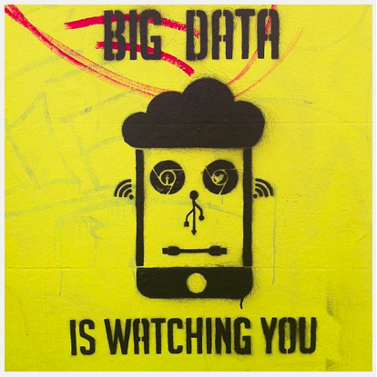

le Web
Le world wide web, ou toile en français, est un service construit sur l’infrastructure du reseau internet pour mettre à la disposition des utilisateurs des documents repartis au niveau mondial.
Normalisation de la présentation de l’information (w3c)
Le bon fonctionnement du www nécessite le respect de normes et de formats de fichiers et de protocoles entre serveurs et clients
moteurs de recherche
Logiciel qui dispose d’une indexation des pages internet. L’indexation est un traitement qui consiste à analyser des pages pour y detecter des mots clés utilisés fréquemment par les internautes.
interaction client / serveur
- reseau P2P : mode d’organisation sur internet où toutes les machines se comportent alternativement comme clients ou serveurs. Ce mode a pu être utilisé pour mettre à disposition illégalement des fichiers en infraction avec le droit d’auteur. La repartition des documents sur de multiples machines a compliqué les poursuites judiciaires. Ce mode P2P connait un regain d’interet avec les Blockchains qui consistent à repliquer sur de nombreuses machines les preuves chifrées et vérifiables d’un ensembles d’informations enregistrées. (monnaies virtuelles)
sécurité et confidentialité
- dans le navigateur Mozilla : effacer les traces : bouton bibliothèqe, Historique, marques pages et plus encore > Historique > Effacer l’historique recent (cocher au choix : historique, historique des formulaires et des recherches, cookies et câche) ET Données > préférence des sites
- paramétrer le navigateur : menu > Options > Vie privée et sécurité (Il y a plusieurs niveaux de sécurité). Dans Identifiants et mots de passe > afficher les mots de passe. Dans cookies et données > recherche la présence d’un cookie de connexion au site du lycée…
- et Vie privée : blocage de contenus : toujours, afin de bloquer les contenus tiers qui peuvent ralentir la navigation ou distraire.
Impacts sur les pratiques humaines
- Le web permet à chacun de publier des informations sans contrôle préalable par une autorité. Cette revoluiton democratique amène la présence de fausses nouvelles (fake news) et le besoin de verification. Libération (désintox) et Le Monde (le blog des decodeurs) possèdent des espaces dédiés à la pratique, dédiant des journalistes à cette seule tâche.
- Wikipedia est un exemple d’encyclopedie libre et participative, où des centaines d’internautes publient et relisent et effectuent des milliers de changement par heure.
- Le web et le droit d’auteur, licences creatice commun
- Les traces laissées de manière voulue ou non lors de sa navigation

D’où l’importance d’un cadre juridique permettant de protéger les usagers, préoccupation à laquelle répond le règlement général sur la protection des données (RGPD).
Compétences
- [Co] la difference entre internet et le web : le web correspond à la solution pour naviguer sur internet, et internet, c’est la contraction de Interconnected et Network (le maillage physique)
- [decrire langages] ouvrir une page html simple avec le navigateur, voir le code source; rechercher les correspondances entre les éléments de la page et le code source (texte, image, lien)
- [decrire données] decrire la structure d’une URL, ses symboles (séparateurs), ses paramètres : l’URL, unique, comporte le nom du protocole, de la machine qui heberge la ressource, le nom de la ressource et eventuellement des paramètres optionnels.
- [outils] traces laissées dans le navigateur lors de la navigation et paramétrage : historique, cookies
- [algo données et Co des systèmes] pagerank : repose sur le principe de calculer la popularité d’une page à partir de la popularité des pages qui la citent. C’est une tâche automatique dont on peut avoir un aperçu avec une activité… On peut partir d’un graphe (orienté), avec pour noeuds, les pages, et pour arêtes (ou arcs), les liens. Réaliser alors un parcours aléatoire de ces pages et calculer le nombre de visites pour chacune (avec un grand nombre de visites, c’est long et il faut utiliser un programme)
 Edit this page
Edit this page